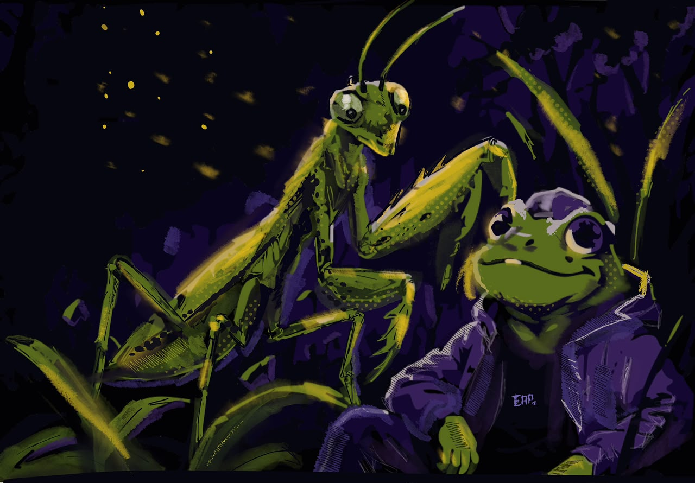
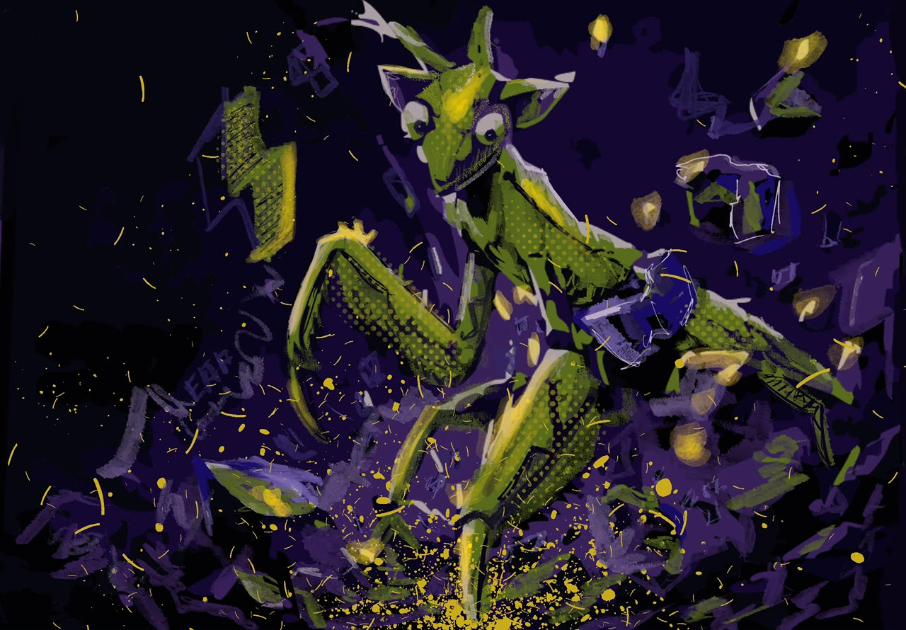
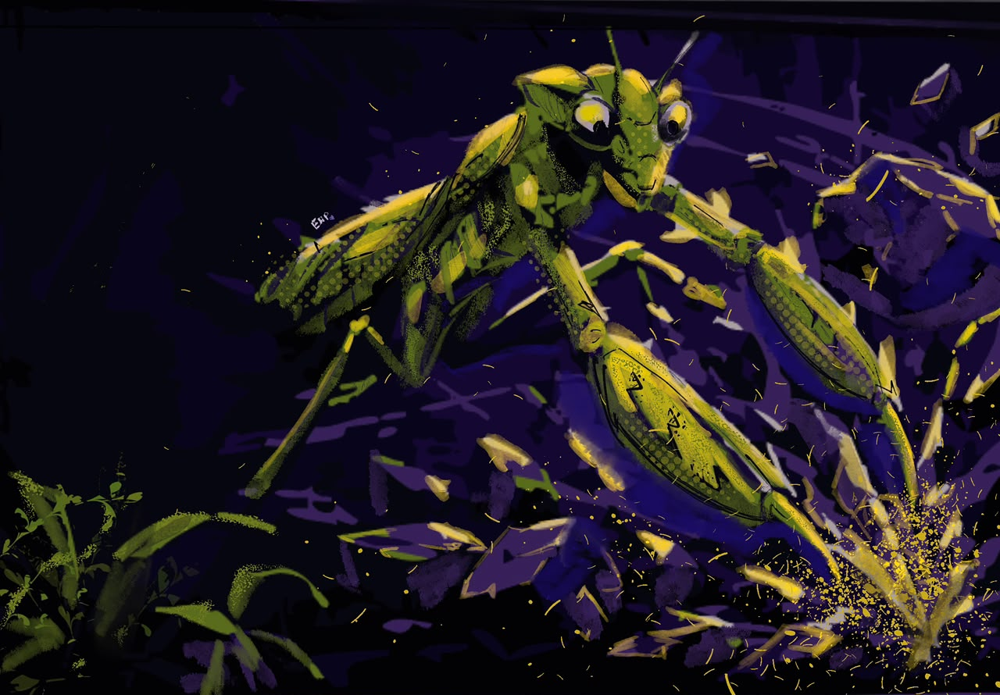
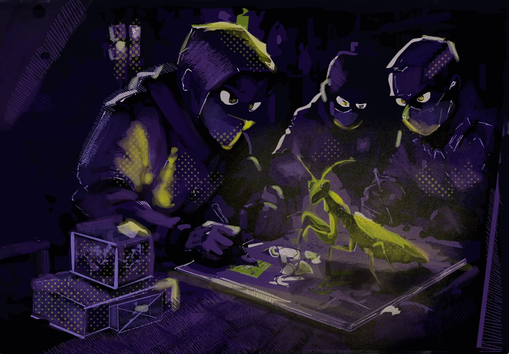
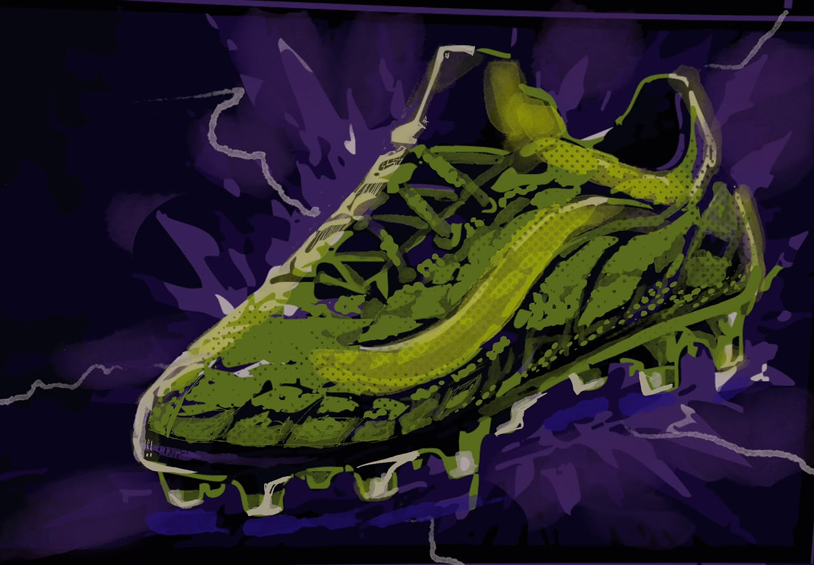
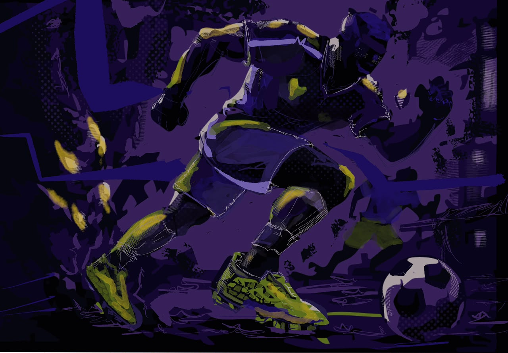
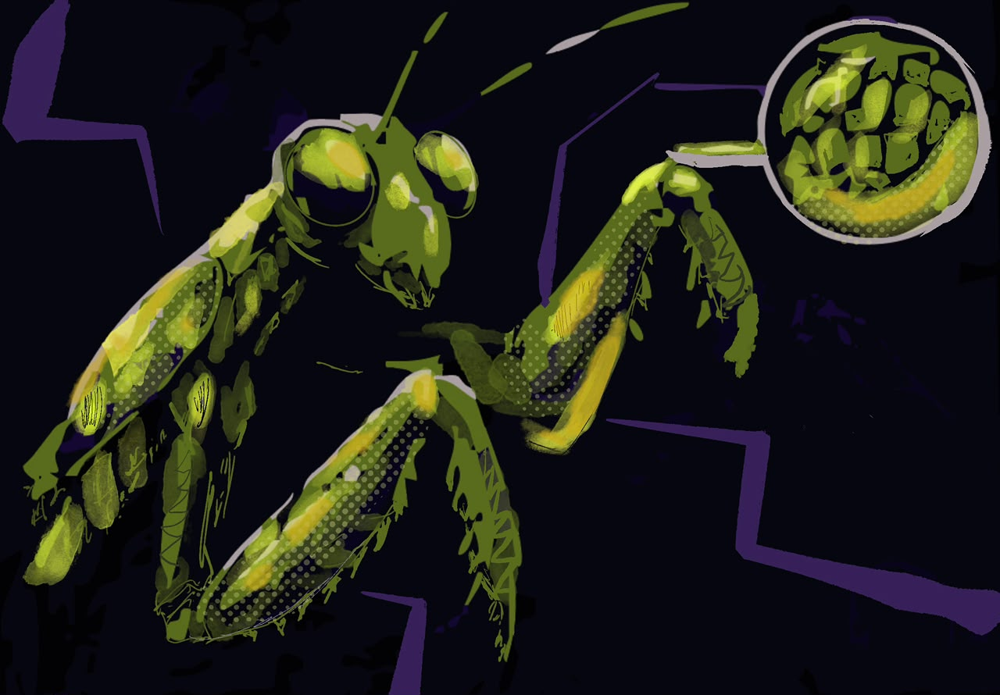
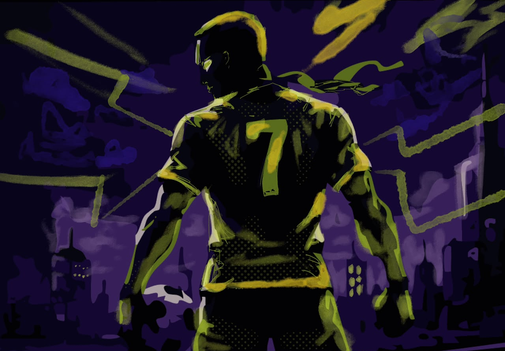
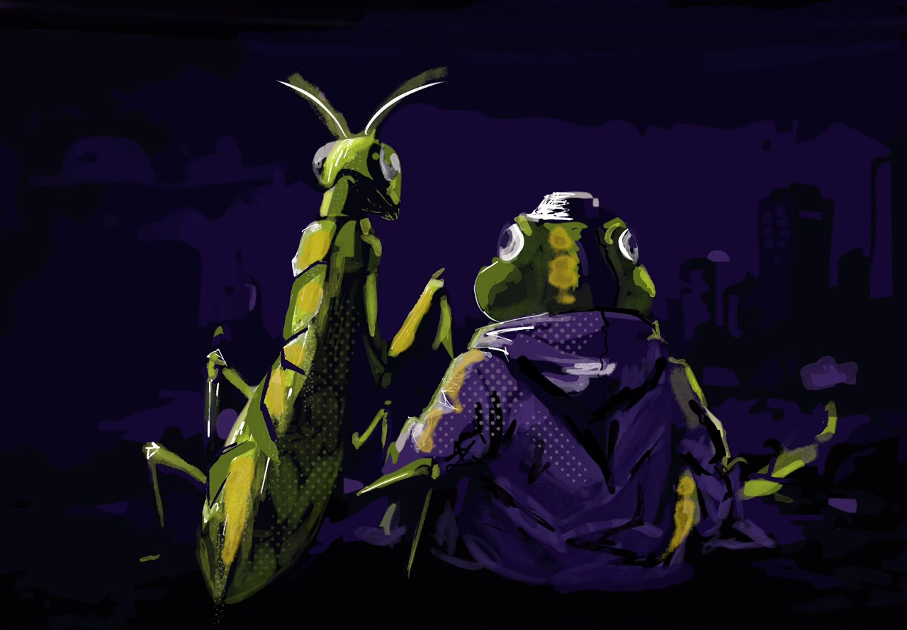

// ISSUE 001 — A KICKERSHOE COMIC
THE MANTIS ORIGIN
A motion comic. A footnote in folklore. A shoe born from a broken leg and a quiet vow.
// THE FULL STORY
THE COMIC
-
01 // FRIENDS

CAPTION — 01Two outcasts in the tall grass. He wasn't the only one who didn't fit.
-
02 // DRILL

CAPTION — 02Every night, alone, he drilled the move no one taught him.
-
03 // THE BREAK

CAPTION — 03Faster. Harder. Something in him started to break loose.
-
04 // TAKEN

CAPTION — 04Then the men came with cages and masks, calling it science.
-
05 // STUDIED
CAPTION — 05
In captivity, they measured him. Sketched him. Wondered what his shell could become.
-
06 // THE SHOE

CAPTION — 06What they built from him would outlive the both of them.
-
07 // FIRST TOUCH

CAPTION — 07Laced up, a stranger ran faster than his own shadow.
-
08 // COPIED

CAPTION — 08The world studied every ridge and vein, trying to copy what couldn't be copied.
-
09 // THE NUMBER

CAPTION — 09Number 7. A name the crowd would learn to chant.
-
10 // HOME

CAPTION — 10And somewhere past the floodlights, two old friends watched the city they changed.
// FIELD NOTES — RESTRICTED
LORE
ENTRY 01WHO IS THE MANTIS?+
Born in the wet grass east of the river. Smaller than his peers. Quieter. He watched football from behind a leaf for nine seasons before he ever touched a ball. He is, by all accounts, still alive.
ENTRY 02THE BOOT'S FIRST MATCH+
A back-alley five-a-side, no name on the sheet. Player wore them straight from a paper bag. Scored four. Vanished at half-time. The bag was never returned.
ENTRY 03WHY GREEN?+
Because invisibility is a kind of armour. Because the grass owes him nothing and everything. Because gold without green is just a bruise.
ENTRY 04THE GOLD STITCHING+
Filament is real. We tested it. We don't know where he gets it. He won't say.